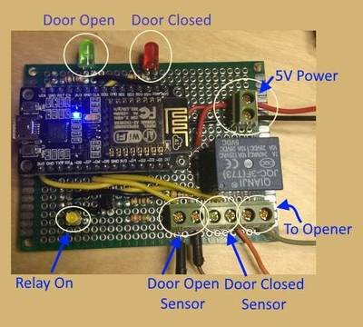
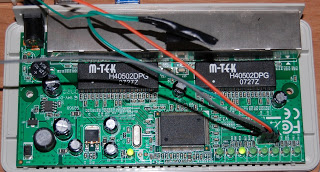
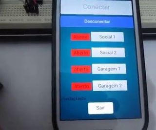

2016-04-07 - Nº 49

Editorial
Aqui está a Newsletter Nº 49 no seu formato habitual. Agora às quintas-feiras. Se gostar da Newsletter partilhe-a!
Todas as Newsletters encontram-se indexadas no link.
Esta Newsletter tem os seguintes tópicos:
Nesta semana a NVIDIA apresentou o novo Tesla P100 - uma placa aceleradora da família Pascal que foi especialmente desenhada para High Performance Computing. Esta placa tem a capacidade de 21.2 TFLOPS de processamento, sendo ideal para deep learning, e technical computing. O MIT apresentou um robot impresso em 3D que é feito de material solido e liquido. A Samsung fez um pedido de patente para umas lentes de contacto com um pequeno "display", uma câmara, uma antena e diversos sensores que detectam o piscar de olhos e o movimento. Esta tecnologia combinada com um "smartphone" abre inúmeras possibilidades de interação entre o Homem e o dispositivo.
Na Newsletter desta semana apresentamos diversos projetos de maker e na rubrica "Documentação" apresentamos seis livros (eBooks) que podem ser descarregados livremente e que esta semana são sobre Processamento de XML em Java, Pensando em Java, caixa de ferramentas Unix, Uma visão aprofundada de TypeScript, O livro de mão do ErLang e o Manual do GNU Emacs.
 João Alves ([email protected])
João Alves ([email protected])
O conteúdo da Newsletter encontra-se sob a licença  Creative Commons Attribution-NonCommercial-ShareAlike 4.0 International License.
Creative Commons Attribution-NonCommercial-ShareAlike 4.0 International License.
Novidades da Semana ^
Inside Pascal: NVIDIA’s Newest Computing Platform
"Today at the 2016 GPU Technology Conference in San Jose, NVIDIA CEO Jen-Hsun Huang announced the new NVIDIA Tesla P100, the most advanced accelerator ever built. Based on the new NVIDIA Pascal GP100 GPU and powered by ground-breaking technologies, Tesla P100 delivers the highest absolute performance for HPC, technical computing, deep learning, and many computationally intensive datacenter workloads."
First-ever 3-D printed robots made of both solids and liquids
"One reason we don’t yet have robot personal assistants buzzing around doing our chores is because making them is hard. Assembling robots by hand is time-consuming, while automation — robots building other robots — is not yet fine-tuned enough to make robots that can do complex tasks. But if humans and robots can’t do the trick, what about 3-D printers? This 3-D hexapod robot moves via a single motor, which spins a crankshaft that pumps fluid to the robot’s legs. Besides the motor and battery, every component is printed in a single step with no assembly required. Among the robot’s key parts are several sets of “bellows” 3-D printed directly into its body. To propel the robot, the bellows uses fluid pressure that is translated into a mechanical force. (As an alternative to the bellows, the team also demonstrated they could 3-D print a gear pump that can produce continuous fluid flow.)"
Samsung is working on smart contact lenses, patent filing reveals
"In an ever expanding universe of wearables, Samsung is doing its best to keep all bases covered. Today, the publication of a patent application shows the company is developing smart contact lenses. The patent application, filed in South Korea, shows a contact lens equipped with a tiny display, a camera, an antenna, and several sensors that detect movement and the most basic form of input using your eyes: blinking. The display projects images directly into the eye of the wearer. An external device, a smartphone, is needed for processing."
Ciência e Tecnologia ^
NASA Engineers Tapped to Build First Integrated-Photonics Modem
"A NASA team has been tapped to build a new type of communications modem that will employ an emerging, potentially revolutionary technology that could transform everything from telecommunications, medical imaging, advanced manufacturing to national defense. The space agency’s first-ever integrated-photonics modem will be tested aboard the International Space Station beginning in 2020 as part of NASA’s multi-year Laser Communications Relay Demonstration, or LCRD. The cell phone-sized device incorporates optics-based functions, such as lasers, switches, and wires, onto a microchip — much like an integrated circuit found in all electronics hardware. Once aboard the space station, the so-called Integrated LCRD LEO (Low-Earth Orbit) User Modem and Amplifier (ILLUMA) will serve as a low-Earth orbit terminal for NASA’s LCRD, demonstrating yet another capability for high-speed, laser-based communications."
Delivering Genes Across the Blood-Brain Barrier
"Caltech biologists have modified a harmless virus in such a way that it can successfully enter the adult mouse brain through the bloodstream and deliver genes to cells of the nervous system. The virus could help researchers map the intricacies of the brain and holds promise for the delivery of novel therapeutics to address diseases such as Alzheimer's and Huntington's. In addition, the screening approach the researchers developed to identify the virus could be used to make additional vectors capable of targeting cells in other organs. - See more at: https://www.caltech.edu/news/delivering-genes-across-blood-brain-barrier-49679#sthash.yNmB2LHg.dpuf"
-
"MIT researchers have developed a new type of radio frequency identification (RFID) chip that is extremely difficult to hack. If such chips were widely adopted, it could mean that an identity thief couldn’t steal your credit card number or key card information by sitting next to you at a café, and high-tech burglars couldn’t swipe expensive goods from a warehouse and replace them with dummy tags."
Waterloo physicists discover new properties of superconductivity
"Superconductivity could have implications for creating technologies like ultra-efficient power grids and magnetically levitating vehicles. Physicists at the University of Waterloo have led an international team that has come closer to understanding the mystery of how superconductivity, an exotic state that allows electricity to be conducted with practically zero resistance, occurs in certain materials."
UCLA researchers release open source code for powerful image detection algorithm
"A UCLA Engineering research group has made public the computer code for an algorithm that helps computers process images at high speeds and “see” them in ways that human eyes cannot. The researchers say the code could eventually be used in face, fingerprint and iris recognition for high-tech security, as well as in self-driving cars’ navigation systems or for inspecting industrial products. The algorithm performs a mathematical operation that identifies objects’ edges and then detects and extracts their features. It also can enhance images and recognize objects’ textures. The algorithm was developed by a group led by Bahram Jalali, a UCLA professor of electrical engineering and holder of the Northrop-Grumman Chair in Optoelectronics, and senior researcher Mohammad Asghari."
Bioengineer designs diagnostic microscope costing less than $1
"It’s an invention that would make TV’s secret agent MacGyver proud: a fully functional microscope that can be assembled from folded paper and a tiny bead of glass. And it only costs about 50 cents. By adding a watch battery, a light-emitting diode and an on/off switch, it can be configured to diagnose blood-borne diseases such as malaria, African sleeping sickness, schistosomiasis and Chagas — all for under a dollar. The Foldscope is the brainchild of Manu Prakash, PhD, assistant professor of bioengineering. He developed the idea during medical need-finding trips to India, Thailand, Uganda and Nigeria with graduate students James Cybulski and James Clements. During the trip, the team witnessed the deadly toll of infectious diseases including malaria, and noted that many of the remote villages couldn’t afford conventional microscopes or rapid diagnostics tests."
Documentação ^
A documentação é parte essencial do processo de aprendizagem e a Internet além de artigos interessantes de explorar também tem alguma documentação em formato PDF interessante de ler. Todos os links aqui apresentados são para conteúdo disponibilizado livremente pelo editor do livro.
Livros

-
"XML is one of the most desirable skill along with Java. You often need to work with XML files in large projects, as it's one of the most widely used data transport format. This Java book is a comprehensive and up-to-date collection of various XML technology and how to use them with Java programming language. You will learn about different XML parsers e.g. SAX and DOM, JDOM, XPATH, and XSLT etc. If your work involves, XML and Java, then this is the book you should read."
Think Java - How to Think Like a Computer Scientist
"Think Java is an introduction to Java programming for beginners. It is tailored for students preparing for the Computer Science Advanced Placement (AP) Exam, but it is for anyone who wants to learn Java."
-
"This document is a collection of Unix/Linux/BSD commands and tasks which are useful for IT work or for advanced users. This is a practical guide with concise explanations, however the reader is supposed to know what s/he is doing."
-
"The definitive guide to TypeScript. Dive into all the details that a JavaScript developer needs to know to be a great TypeScript developer."
-
"The Erlang Handbook is a summary of the language features and the runtime system. It is aimed at people with some programming experience, serving as a quick introduction to the Erlang domain."
GNU Emacs Manual - Seventeenth Edition, Updated for Emacs Version 24.2
"GNU Emacs is much more than a text editor; over the years it has expanded into an entire work flow environment. Programmers are impressed by its integrated debugging and project management features. Emacs is also a multi-lingual text editor, can handle all your email and Usenet news needs, display web pages, and even has a diary and a calendar for your appointments. When you tire of all the work you can accomplish with it, Emacs contains games to play."
Modelos 3D ^
Com a disponibilidade de ferramentas que permitem dar azo a nossa imaginação na criação de peças 3D e espaços como o thingiverse para as publicar, esta rubrica apresenta alguns modelos selecionados que poderão ser úteis.
Magic boxes
One day, my 8-year-old daughter showed me her origami and called it magic boxes. She took a video to explain why it's magic.
Adjustable Cable Holder
I've watched a couple of wire holders / groove clamps show up on thingiverse, but they all only handle certain sizes of wire. This can accommodate anything from 1mm to 20mm in diameter.
This is designed for M3 bolts & nuts:
- x2 10mm
- x1 50mm
- x6 non-locking nut
- x3 matching washers
Flexing Battery Holders - Customizable
This is a minor fork of Enif's Flexing Battery Holder. It will produce a battery holder with an arbitrary number of cells in parallel and series.
Thanks to Infinigrove for sorting out alternating symbols. Find the latest version of this at GitHub: https://github.com/txoof/flexbatt
Either choose your battery size and number of cells through the customizer, or use this as an includable library in another project or directly from the .scad file.
Wires can be passed through the ports in either end and wrapped around the small bars at either end of the battery holder. Route them and add a bit of solder for a solid joint. The built-in spring will help secure the battery.
It is possible to load the batteries in with either the negative or positive terminals toward the "spring". Wire your holder accordingly.
Projetos Maker ^
Diversos Projetos interessantes.
-
"Its a common occurrence in any office youre on Facebook or browsing SparkFun when all of a sudden your boss walks in to see that youre not working. This project aims to avoid that embarrassment and frowns from management. The Boss Alarm alerts you of anyone walking into your office and automatically changes the active program on your computer. The sensors are inconspicuously hidden in cute woodland creatures that are guaranteed to brighten up your office and definitely not creep out any of your coworkers!"
-
"Function generator is a rely useful tool in the lab, a simple version can be build at home, there's a lot of examples on the Internet, some are much more complex and powerful, but this one is intended to be really simple and cheap. It can be also built-in in some bigger projects that also requires a generator. The generator can output (only) square signal with adjusted frequency and pulse width. The amplitude may be also modified by soldering different values on the voltage divider on the output, it's a bit laborious, but if it will be used in digital or microprocessor projects, then there isn't really need for amplitude adjustment."
-
"PJON (Padded Jittering Operative Network) is an Arduino compatible single wire, multi-master communication bus system implemented in 270 lines of C++ and Wiring (not considering comments). It is designed as an alternative to i2c, 1-Wire, Serial and other Arduino compatible protocols. If you are interested to know more about the PJON standard, visit the Wiki. If you need a wireless multimaster implementation check PJON_ASK."
Have All the Emulators Inside a Portable Joystick
"The main purpose of this instructable is to take your favorite classic games everywhere inside a usb joystic, In order to run it in any Pc or Laptop,without installing any program.a real s.o linux arcade will be inside the joystick"
-
"A system to monitor shared washing machines in a house(hold) that notifies you when your machine is finished or one becomes available."
-
"In this instructable i will show you how i made my first wooden chest. From the zero step to the finishing step:) I hope you are gonna love this and maybe it will inspire you to make your own light-chest! So let's start."
Ambilight system for every input connected to your TV
"I have always wanted to add ambilight to my TV. It looks so cool! I finally did and I was not disappointed! I have seen many videos and many tutorials on creating an Ambilight system for your TV but I have never found a full tutorial for my exact needs."
Easy Arduino Menus for Rotary Encoders
"Rotary encoders with centre-push buttons are cool input hardware for projects, especially if you want to be able to scroll through menus and select options. Hopefully this Instructable will give you the confidence to try a basic menu system out and combine it with a rotary encoder to give a professional feel to your next project!"
-
"This is my Mind Reader for Arduino. The Mind Reader can tell you which letter of alphabet (ABC) or which playing card you have imagined with only few questions you need to answer. It is a very simple project with few wire connections but the results are surprising!"
-
"This device reads hand keyed Morse code from a signal key (or an ordinary switch) and translates it to plain text and show the Morse code you're keying on an LCD. I use it to train my own Morse keying skills. The decoder automatically corrects itself for your keying speed."
Toothbrush Timer With Mathquiz
"This was my first Arduino project, and since the prototype was quite a success with the children, I soldered a permanent version. Since our bathroom has no accessible power plug, I made it battery powered. Brushing the teeth is expected to take 130 seconds: 30 seconds each for each corner and 10 seconds for the tongue. An animated toothbrush reminds which stage you are. After one minute a true/false math question will be asked. Only by answering correctly and continuing to the end a point will be earned. The difficulty of the math questions will go up when 4 questions have been answered correctly (or down after two consecutive mistakes). The scores and levels are kept in EEPROM for 4 users."
-
"In this project I will show you how I made a Magic Mirror that shows the date, time, some news and a little phrase at the bottom. You will use a Raspberry Pi, a computer screen and a webpage to make it look like you have "a smart mirror"."
-
"If you're here, you probably know basically what a NRF24L01+ device is. If you have a bunch of them, and get them hooked up properly, you can theoretically create a wireless network of Arduinos (or other MC devices). Sounds easy, right? Well, I hope it will be much easier with the help of this Instructable. If you've been trying to figure this device out, you can pretty well assume that any Sketches prior to 2014 won't work -- that is, they won't verify/ compile due to changes in the Arduino IDE. There's also a paucity of examples that actually demonstrate a network of more than two devices!"
-

"This IoT project is designed to create a useful device and also a framework for other devices."
-
"When I first moved to Pittsburgh, I had a serendipitous moment when I walked by a place called TechShop. Many of you may have heard of it but I didn't and the staff was kind enough to give me tour. The place blew my mind and to sweeten the pot, they told me veterans receive a year membership for free! I immediately took classes in wood & metal working, and welding. It was the 3D printing and laser engraver class that kept me coming back the most, though. I did so much laser engraving/cutting almost every free weekend I had."
Control a Small Linear Actuator With Arduino
"This Arduino Linear Actuator Tutorial shows how to control a Firgelli Small Linear Actuator using an Arduino compatible board and various input sensors, including a Slider and Rotation Knob for direct control, Joystick for incremental movement, and three buttons with preset positions (preset in the code with each position assigned to a button, so when a user pushes a button the small linear actuator moves to that position)."
Behringer v-tone GMX212 Hybrid tube amplifier mod
"For this project I've used 12AX7 vacuum tube. This tube is one of the most used for the guitar preamplification. So there are many resources available on web. The first problem i faced it's the power stage. Tubes needs high voltage in order to work properly. The solution I've found was to connect a 230V/9V power transformer with secondary and primary reversed. That way, connecting it to the 10.5V AC output of the main Behringer transformer i can get almost 160V DC. Any tube also needs a low voltage current to power up the heater. I choose to use a 7805 voltage regulator, shifted by 1.3 volts using two switching diodes. This gives me the 6.3V DC I need."
Automatic monitor brightness controller
"This is an automatic "monitor brightness controller" based on environmental light conditions. This system use USB port base sensor unit to measure the light level and control monitor brightness accordingly. We design this system to reduce the eye stress by matching the monitor brightness with environmental lighting."
Simplified Arduino AC Current Measurement Using ACS712 Hall Effect Sensor
"This is a simplified approach to my prior Instructable regarding measuring AC current with the ACS712 current sensor."
5V to 12V Step Up DC-DC Converter
"Step up DC-DC converter is based on LM2577-ADJ IC, this project provides 12V output using 5V input, maximum output load 800mA. The LM2577 are monolithic integrated circuits that provide all of the power and control functions for step-up (boost), fly back, and forward converter switching regulators. The device is available in three different output voltage versions: 12V, 15V, and adjustable."
Arduino controlled light dimmer
"Switching an AC load with an Arduino is rather simpel: either a mechanical relay or a solid state relay with an optically isolated Triac. (I say Arduino, but if you use an 8051 or PIC16F877A microcontroller, there is stuff for you too here.) It becomes a bit more tricky if one wants to dim a mains AC lamp with an arduino: just limiting the current through e.g. a transistor is not really possible due to the large power the transistor then will need to dissipate, resulting in much heat and it is also not efficient from an energy use point of view."
-
"A simple controller for a RGB LED strip, with independent control of color and intensity. The design is based on a simple STM32F0 microcontroller. It can handle NeoPixel and DotStar protocols, and the power supply can vary from 5V to 15V."
-
"My aquarium is a Juwel Rekord 800 and has a Juwel feeding machine. I bought the machine to be able to feed my fish on regular times when I'm not around. It's a great machine, but as an engineer I see some room for improvement."
-
"In the market of robot,there are plenty of smart avoidance robot kit for sale,but I don't like to buy finished kit, to develop old rc car toys in storage box is more challenge.Building an avoidance robot by using its chassis.Installing mini controller and ultrasonic distance sensor module.Driving dual motors by L298N module."
-
"My first creation, a smart watch."
Using an esp8266 arduino to control a relay using home-assistant
"This Instructable shows how to connect a relay module to an esp8266, something that should be straight forward but needs a few extra components to make the relay work correctly if you're using the small esp device in the pictures."
ESP8266 Wireless Toilet Usage Indicator (Smart Home)
"Recently, we have recruited a number of new workmates, so there have something embarrassing happened, sometimes when I went to the toilet and found that both of the two toilets are occupied, once I complain to kevin about it, then he said: If there is a kind of indicator LED like an airplane toilet lights, so we could know whether the toilet be used. Good idea! I praised him: hey! Boy! You are really a genius! OK, now we have prepared everything, let think about that if you want to achieve remote control, what we need to do? The first role is the most popular platform board -ESP8266, as it happens, we have get some ESP8266 IOT Board just recently, it can achieve wireless control easily, and the most important thing is it cheap enough."
-
"Over 3 years ago, I published a simpel TRIAC AC dimmer for the arduino. That proved to be a very popular design. Yet in spite of the simplicity of the circuit the software needed was a bit complicated as it needed to keep track of the zero crossing of the AC signal, then keep track of the time and then finally open the TRIAC. So to avoid letting the arduino just wait for most of the time, an interrupt and a timer were necessary."
Wireless communication between two Arduinos using inexpensive RF modules
"This article explores an easy wireless communication setup between two Arduinos using low-cost ASK RF transmitter and receiver modules that are readily available in the market. They are found in different shapes, but functionally they are all same. Both Tx and Rx modules contain a single data line for input and output and support a low-speed Amplitude Shift Keying modulation for data communication. You can get them with 315MHz or 433MHz carrier frequency. In this tutorial, I am using a 433MHz Tx/Rx pair with two Arduino boards to illustrate how to construct a low-range wireless temperature and humidity monitor."
ESP 8266 Standalone WiFI Relay Control
"To control a relay switch using esp8266 in standalone mode(without arduino,pic or any other Micro-controller) via Web-UI"
Make the Ultimate Bluetooth Speaker
"I really really Want a Bluetooth Speaker that is decent in form and performance. I want a Bluetooth Speaker to last longer and affordable in price but here in the Philippines good performance is equals to higher price you need to pay almost 5000-10000 pesos or 110-250 USD to get a decent one."
-
"The buttons on Ember's front panel leave a lot to be desired like clicky-ness, colors, optional light-upgrade, not having resin on them, etc. Don't worry you don't have to feel unfulfilled any longer! If you follow this Instructable you can pick whichever buttons tickle your fancy. And you'll have the added benefit of being able to cancel anyone's print anywhere from the local network that Ember is on. Neat!"
-
"I came up with the idea of creating a neopixel clock, where each neopixel shone into some frosted acrylic, red signifies hours, blue minutes and green seconds. The colours are mixed as they overlap creating a bit of art as well as being able to display the time. If you want to see it in action take a look at the video. The use of acrylic would expose me to some 2D CAD and laser cutting."
-
"I have an old fridge and sometimes the doors stay open wasting energy. So i created this simple Fridge's door alarm which will buzz when the door is open for x seconds."
Convert your cheap "unmanaged" switch to a VLAN capable layer 2 managed switch for just $2

"he title of that post may look crazy at first, but it's not, it is entirely possible to convert your cheap 100M 8 port switch or stuff like that to a managed switch. That's possible simply because, if you open up one of these and look at the datasheet, you will find out that they use the same switch chips used frequently inside of routers ( which they can be reprogrammed as you like with openwrt )."
-
"Many of you may have seen the Adafruit PCB ruler (also used by the awesome Voltera). The design was actually adapted from my own design back in University! To improve on the original idea, I have created a reference business card."
-
"Eventually on your journey into the world of embedded electronics, you will want to hack a vehicle for data. As with many other integrated systems, there is a specific language for talking with vehicles. This tutorial will give a basic introduction to the On-Board Diagnostics (OBD) specification that vehicles and other industrial machines use to communicate with the outside world."
MeArm Robot Arm - Your Robot - V1.0
"This is the very latest version of the build instructions for the MeArm Robot Arm. The MeArm first came to instructables in April 2014 when we claimed a second prize in the Robots Contest. Since then we've seen around 10,000 built all over the world! Just a handful are shown on our map, but we're really proud that with the help of instructables we've become the world's first viral robot!"
Build an Arduino-Powered Candy Vending Machine
"When I was a kid, every year for Halloween instead of just handing out candy in a bowl our neighbor would create a magical machine that allowed kids to select one of four types of candy using a Morse code key hooked up to a buzzer. After keying in the code, a light bulb over the selection would illuminate and the candy bar would come flying out of a chute. The premise of The Machine was that it was fully automatic (imagine a box about the size of 12-pack of beer, sitting on a table, with a curtain strung up behind it), and they did a great job keeping the story going year after year."
-
"This is my growing family of tiny robots based on ATtiny controllers, pager motors and photo-transistors. These three little autonomous vehicles have a lot of similarities such as controller, battery and movement mechanism, and they all percieve the world through photo-transistor eyes. But they are all distinct designs with different capabilities and behaviors. They are the first members of a growing family of miniature robots that I have been playing with off and on for a long time"
Converting Micro-Servos for Continuous Rotation
"Micro-servos are great devices perfect for adding motion to your projects. Unlike steppers, they can be controlled directly from your Arduino or other favorite microcontroller. Most servos are limited to 180 degrees of motion. This allows microcontrollers to know the exact position of the servo's shaft. You can find continuous rotation servos, but if you have access to lots of cheap micro-servos of the 180 degree variety, it might be helpful to learn this quick hack to make them continuous. "
-
"Drawing on a computer can't match the ease and accuracy of moving around a pencil on paper in real life. A mouse or trackpad is far too cumbersome to maneuver, making even a stick figure hard to look good. But what if there was a way to map actual pencil strokes onto the computer so that you could still draw naturally AND have your creation on your screen? This is why we made Back to the Drawing Board!, a simple way to use a pen or pencil and draw on actual paper which translates your drawing on to a screen."
Target Practice with Arduino and Laser Pointer
"So let's say you're an imperial stormtrooper. You're constantly gunning for rebel scum but when you're face-to-face with the enemy you couldn't hit the broadside of an AT-AT with your laser rifle. Worry no more! In this instructable, we'll be making a target practice circuit with an Arduino, LEDs, and a photoresistor so you can practice your aim with a laser pointer or even a flashlight."
-
"You need take apart old fax machine, I don't have any photo of it before tear-down. mine have 2 stepper motors 1 that move printer head, other move paper."
Multi-Purpose Plywood Robot Prototyping Base
"The instructable covers the entire process of preparing your plywood base, adding motors and wheels and even to make a DIY motor driver. At last, there is a basic project to check whether if everything is done correctly. In all, you will require a maximum of 3 hours to do the entire process. So this can also be a beginner project for taking the first step to getting started with robotics. "
Arduino Real Time Alarm Clock With Temperature and LED Lights. Remote Controlled
"Arduino Clock , with , Battery backup (real time clock), Time, Date, Alarm, Temperature, LCD output, IR remote input, Sleep mode, LED lighting (10X) Red and blue multi-mode."
Controlling MeArm With Arduino
"In this Instructable I will show you two ways to control your MeArm, first is with just arduino and for second you wil need 4 potentiometers."
Arduino Bluetooth Garage Door Control with Sensors and Customizable Android App

"Use an arduino to activate relays for opening garage doors and electric door locks. A customizable Android App, connects to arduino via password protected bluetooth pairing. A bluetooth hc-05 module receives commands from an android phone to open doors and transmits back the door states to the phone, wether the door is open or closed."
-
"Currently, one of the popular party games is Wire Loop Game. Where one has to carefully pass a metallic loop around a curved path without touching. If you touch a buzzer would ON. I decided to make it myself as very few parts are needed and costs nothing compared to the fee from Event manager"
That's all Folks!